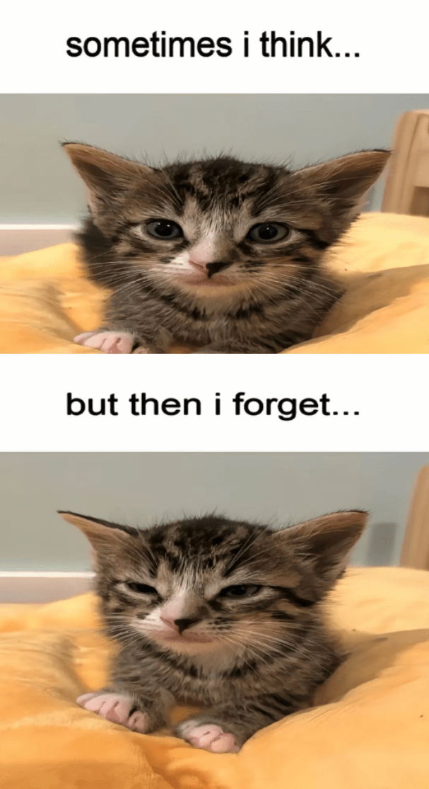

I recently finished Faceminer, I managed to get from start to end in about 2 hours give or take. And, lets just say I didn't expect that ending. If you haven't played the game you should check it out, as this will be kind of a spoiler.
The game starts with you in your brand new j*b as a Faceminer, your job is to buy datasets with people's faces in them, then you click on the faces and get paid. Pretty simple stuff right.
You start expanding your "home setup" which slowly starts expanding to data center scales (in the 1990s 1Tb of ram was a lot). You also start receiving emails which slowly turn darker over time.
You start hearing rumors about AI and global warming. But surely that couldn't be linked to you, you are just clicking for money. And corporate backs you up in their remote office's in the caiman islands.
But as you near the ending of the game, you start hearing news about rising temperatures causing floods, and damage to DNA, the dirty cheaters at the EPA even made you pay carbon offsets (how dare they).
And a journalist named Tom that was sending you emails to get you to spill the beans about faceminer tells you the devastating truth.
All of those emails of people cheering you up, the "being in this together", the reaching the goal. All of that was fake, there were never "other people", you were the only one.
That means that all of that global warming and the death of thousands wasn't a "team effort", its not a "who knew this would happen", it was all you.
But its too late, the planetary heat index is 60C, and you have already crossed the finish line.
Your computer "resets" and you get a kind of administrator view, and you can see reports on how they monitored you.
Subject showed a complete disregard for ethical and moral standards, outstanding performace.
And you can only look at the reflection of the screen and do one thing, log off.
I think that it goes to show about the dangers of "infinite growth" and privacy concerns, and that its not all about money. People should also care for the planet.
Yeah, thats my whole reflection.
As a dumb wise friend once said:
